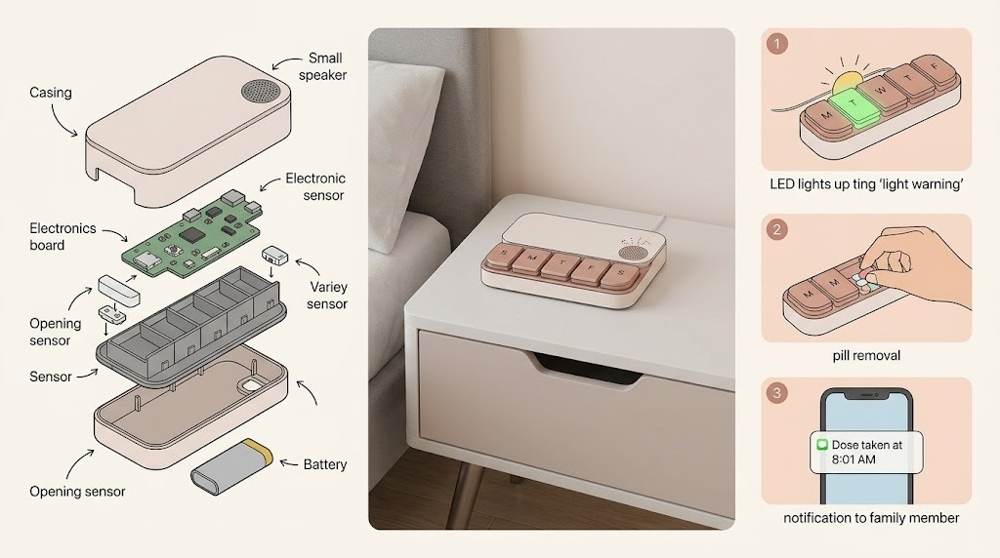
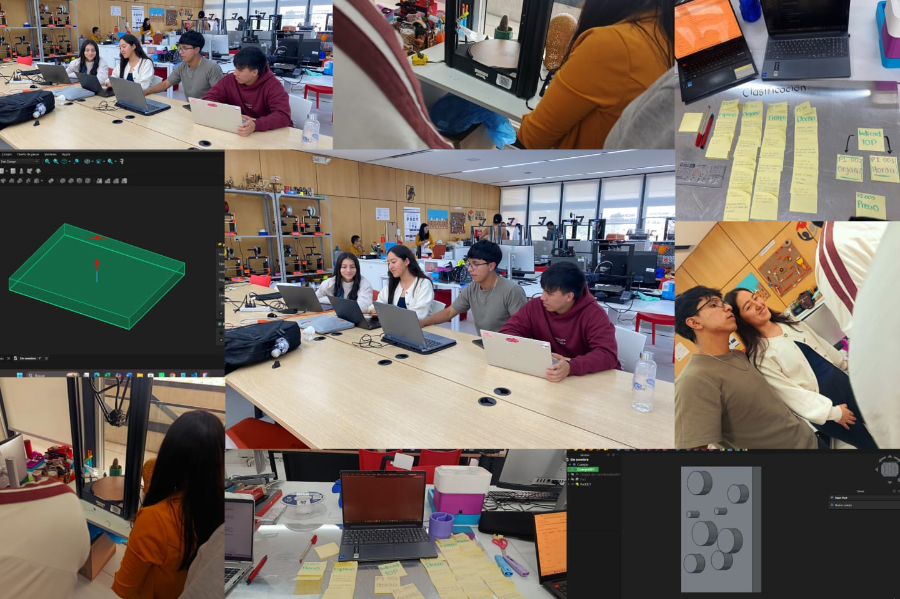

DOCUMENTACIÓN · SEMANA 02
Semana 02
Durante la segunda semana definimos el pastillero inteligente como nuestro proyecto. También exploramos herramientas de diseño 2D y modelado 3D que nos ayudarán a desarrollar las piezas y la apariencia de nuestra propuesta.
📌 Tema de la semana
Selección del proyecto del grupo e introducción a programas de diseño asistido por computadora para crear dibujos en 2D y modelos en 3D.
📝 Actividades realizadas
Revisamos las ideas de proyecto propuestas y elegimos
desarrollar un pastillero inteligente.
La propuesta busca ayudar a recordar los horarios de
medicación mediante señales visuales, como luces indicadoras.
Además, conocimos y practicamos con distintas herramientas
digitales: AutoCAD, FreeCAD, Inkscape, Fusion y Tinkercad.
Comparamos sus posibilidades para dibujar, diseñar piezas y
representar ideas antes de construirlas.
💡 Proyecto elegido: pastillero inteligente

Una ayuda para recordar la medicación
Diseñaremos un pastillero que indique cuándo tomar una dosis mediante luces. En las próximas semanas exploraremos su forma, distribución de compartimentos y los componentes que podrían hacerlo funcionar.
🖥️ Herramientas de diseño 2D y 3D
Cada programa ofrece herramientas distintas. Conocerlos nos permite elegir el más adecuado para cada parte del proceso.
AutoCAD
Herramienta de diseño asistido por computadora que permite realizar planos y dibujos técnicos, principalmente en 2D, además de trabajar con modelos 3D.
FreeCAD
Programa de modelado 3D paramétrico. Permite construir piezas modificables y explorar diseños mecánicos.
Inkscape
Editor de gráficos vectoriales 2D útil para crear formas, ilustraciones, diagramas y diseños planos.
Fusion
Entorno de diseño 3D asistido por computadora para modelar piezas y preparar diseños para procesos de fabricación.
Tinkercad
Herramienta en línea de aprendizaje sencillo para crear modelos 3D combinando formas y probar ideas rápidamente.
DOCUMENTACIÓN VISUAL
📷 Evidencias
Registro del trabajo realizado durante la Semana 02.

Definición del proyecto y exploración de herramientas de diseño.
🌱 Lo aprendido
Aprendimos a convertir una idea de proyecto en una propuesta concreta y a reconocer que el diseño digital puede ayudarnos a planificar antes de fabricar. También distinguimos herramientas para dibujo vectorial 2D y programas para crear o modificar modelos tridimensionales.
⚠️ Retos y soluciones
Un reto fue familiarizarnos con varios programas que tienen herramientas y formas de trabajo diferentes. Para avanzar, identificamos para qué sirve cada uno. Podemos elegir una herramienta sencilla para comenzar el diseño y otra más completa cuando necesitemos desarrollar las piezas con mayor detalle.